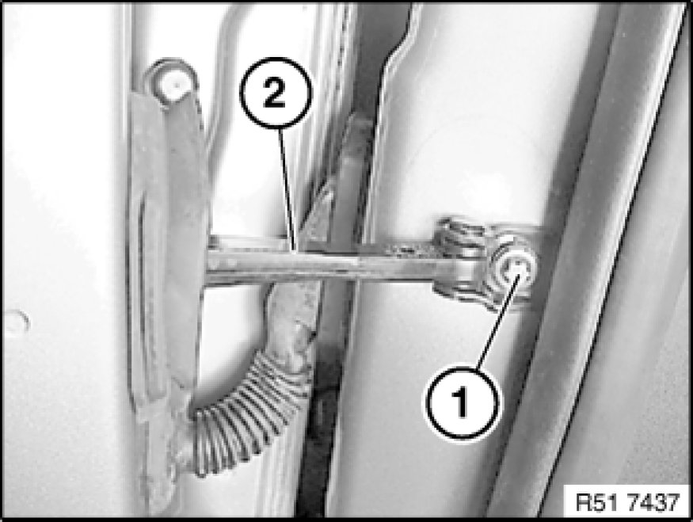
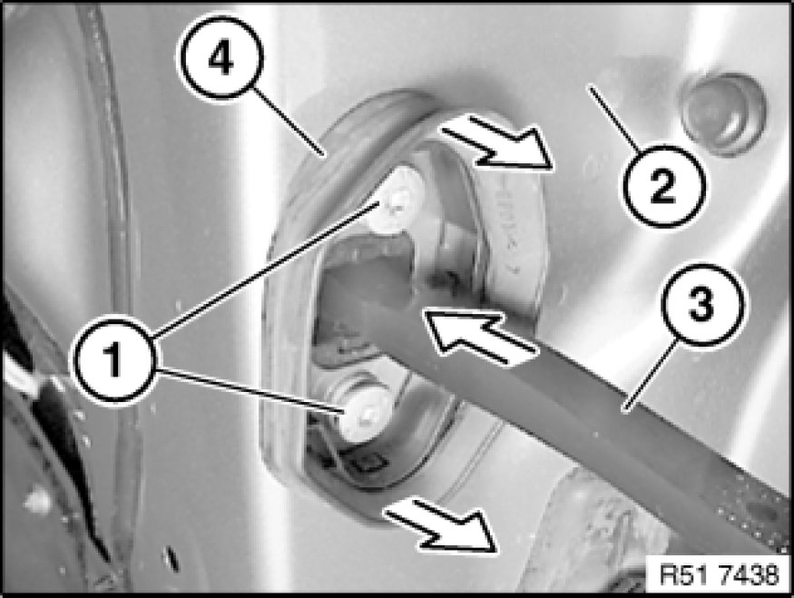
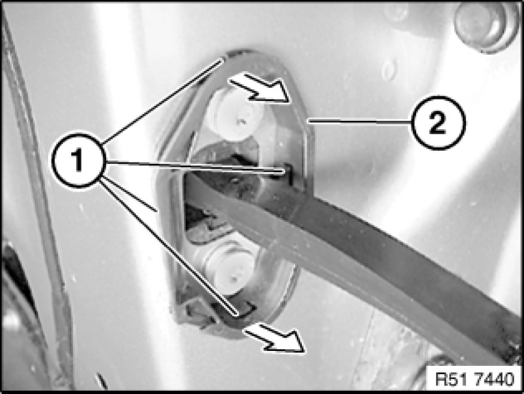
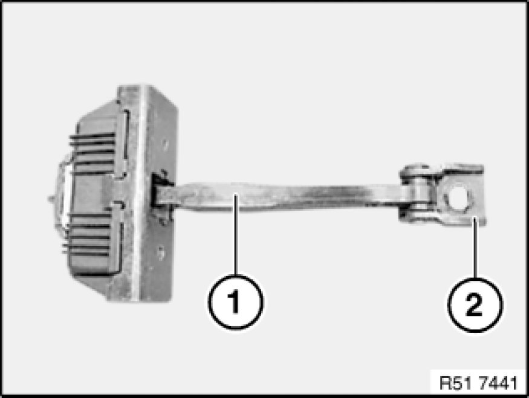

Rear Door Limiter: Service and Repair
51 22 280 - Removing and installing/replacing door retainer on rear left or right door

Necessary preliminary tasks:
- Raise the door window.
- Remove sound insulation in front area only Removing and Installing/Replacing Sound Insulation on Left or Right Rear Door

Release screw (1) on door retainer (2).

Release screws (1) on inner door panel (2).
Feed out door retainer (3) to inner door panel.
If replacing seal:
If necessary, pull off seal (4) in direction of arrow.

If replacing seal:
If necessary, unclip catches (1) on cover (2) and remove in direction of arrow.
Installation:
Catches (1) on cover (2) must not be damaged.

Installation:
Fold back screw plate (2) in order to install door retainer (1).